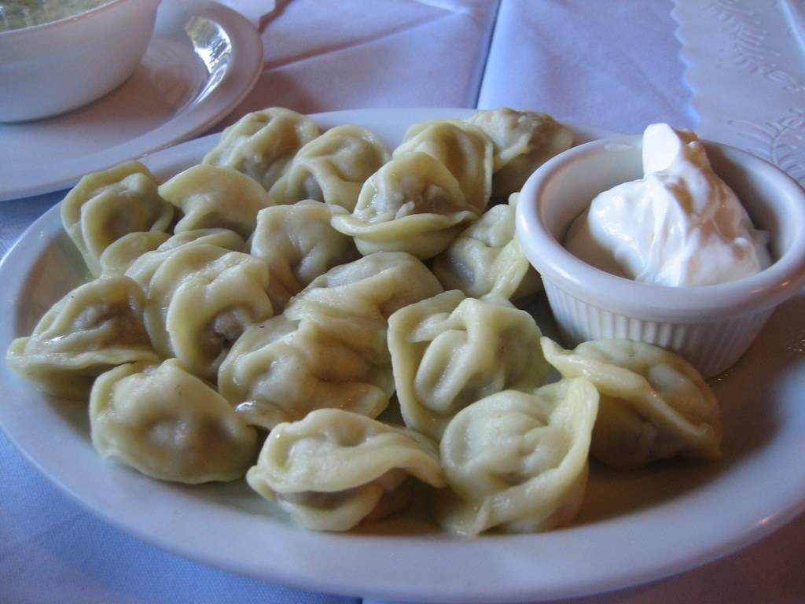

Image Credit
Pelmeni
Pelmeni are traditional Russian dumplings filled with minced meat and spices, typically served with sour cream or melted butter.
Cook time
120 minutes
Calories
420
Instructions
- Mix flour and salt in a bowl.
- Add water and egg, knead into a dough.
- Cover and let rest for 30 minutes.
- For the filling, combine ground meat, onions, salt, and pepper.
- Roll out dough and cut into circles.
- Place a spoonful of filling in the center of each circle.
- Fold dough over filling and pinch edges to seal.
- Bring a pot of salted water to a boil.
- Drop dumplings into boiling water and cook until they float.
- Remove with a slotted spoon and serve with sour cream or melted butter.
Recipe Credits: Link